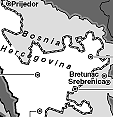

[Temaside] [Faktaservice nr. 7]
Faktaservice nr. 7 95/96, FEBRUAR 1996
BOSNIA:NATO skal ta forbryterne

Etterforskere ved FNs krigsforbryterdomstol for det tidligere Jugoslavia mener at flere tusen bosniere er drept og dumpet i massegraver ved byene Srebrenica, Bratunac og Prijedor. De ligger alle i det serbiske området i Bosnia Ordre fra NATO-hovedkvarteret:
Styrkene i Bosnia må skjerpe seg og anholde tiltalte krigsforbrytere.- Ingen bør bli overrasket om de neste som anholdes i Bosnia er kroater eller muslimer, sier en sentral NATO-kilde. Frykten er stor for at det dannes et bilde av at fredsstyrken IFOR har tatt parti mot serberne.
IFOR har fått klar beskjed fra Brussel om å skjerpe seg: Tiltalte krigsforbrytere skal pågripes. Det er en viktig del av styrkens mandat.
13. februar ga NATOs generalsekretær Javier Solana ordre om full granskning etter at Washington Post skrev at Radovan Karadzic hadde passert amerikanske kontrollposter minst fem ganger uten å bli anholdt. Den bosniske serber-lederen er tiltalt for krigsforbrytelser.
Talsmann Christian Chartier ved Haag-domstolen sier at de to serbiske offiserene som ble sendt med NATO-fly fra Bosnia til Haag vil bli løslatt eller tiltalt i løpet av noen uker.
Brøt kontrakten
Arrestasjonene førte til at de bosniske serberne brøt kontakten med IFOR-styrken. Ved NATO-hovedkvarteret setter man nå sin lit til at spenningen skal avta etter at Richard Holbrooke fikk løfter fra den bosniske regjeringen om ikke å foreta flere slike arrestsjoner.I stedet skal myndighetene sette opp en liste over personer de mistenker. Listen skal så gjennomgås av etterforskerne i Haag, som avgjør hvem som kan pågripes. Holbrooke er nemlig meget klar overfor partene: Ingen skal foreløpig starte egne krigsforbryter-prosesser. Det skal FN ta seg av gjennom domstolen i Haag.
Serberne hevder at 11 av deres folk nylig er blitt anholdt i Sarajevo-området. De klager over at arrestasjonene utgjør et brudd på Dayton-avtalen, der det heter at de som måtte forville seg inn på fiendtlig område, skal sendes tilbake, ikke arresteres.
Bosnia-serbernes selvutnevnte statsminister, Rajko Kasagic, har klaget til FNs spesialutsending i det tidligere Jugoslavia, finske Elisabeth Rehn, på dette grunnlag.
Fredsavtalen gir myndighetene anledning til å arrestere mistenkte krigsforbrytere, men tiltalen må oversendes krigsforbryterdomstolen for godkjennelse. En talsmann for domstolen bekreftet at den er koblet inn i saken.
USAs viseutenriksminister med ansvar for menneskerettighetsspørsmål, John Shattuck, og admiral Leigthon Smith, IFORs øverstkommanderende, besøkte 6. februar to steder som knyttes til serbiske massemord på sivile: Omarska, som offisielt var interneringsleir sommeren 1992, og Ljubija-gruven, hvor et stort antall sivile skal ha blitt begravet.
- Formålet med mitt besøk er å oppnå adgang til de to stedene hvor noen av de verste grusomhetene i denne konflikten kan ha utspilt seg, sa Shattuck. Han håpet at veien nå ville være åpen for krigsforbryterdomstolens etterforskere.
Kilde: AP/Reuter
[Innhold] [Info] [Aftenposten hjemmeside] [Til Fakta hovedside]
{kind=link}